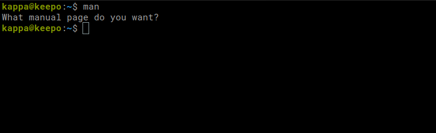

Live coding 1
Live coding 1
This is a blog based on Jeremy Howard’s Youtube video on Live coding 1. Here, we will learn how to use terminal, install python the right way, and install packages using conda/mamba.
Anybody with basic python knowledge can follow along the Youtube video and/or this blog. I recommend you to follow along if you are not familiar with anything in this article.
- Computers running Windows, Mac, and Linux can follow along. Chromebooks may work, but there may be many problems along the way.
- Computers do not have to have GPUs.
Terminal
What is a terminal? A terminal is a device for entering an input to a computer. We type commands here, and the computer will give us output. It looks like this on my computer:
How to open a terminal? On Windows, you can download WSL (Windows Subsystem for Linux). This way, you are installing Linux distribution within Windows, and you can open it like any other app. On Mac or on Linux, you can search it on a search engine how to open it.
Once you open it, you will see something close to my terminal. Inside of this terminal, a shell is running. The difference between terminal and shell is not important for us, and we will use these terms interchangeably.
With a terminal, we can open up directories by typing commands, instead of clicking them in explorer or finder. Here, a directory is a container for files and directories. It’s also called a folder.
Let’s try ls (list) command. Let’s type it in the terminal and press Enter.
The computer will output directories or files in the current directory. You may have different output because you have different directories or folders. Cool thing about using commands this way is that we can also provide options. Let’s try typing ls -a.
What happened? There are more stuff now than before. What does -a do? This reveals ‘hidden’ files. Hidden files are files starting with .(dot). There are many other options associated with commands, which make commands very powerful. However, it also means more things to memorize and learn about! You may be wondering what’s the point of learning about all these? As we will find out later, using commands gives us many benefits, such as command history. With history, we can automate commands easily or find out what went wrong.
Try ls -ah. It also lists file/directory sizes. Options can be used together. It could also be executed as ls -a -h.
Although terminal has a learning curve, it can be a very useful tool because it can boost productivity. Let’s go over some tips.
man command
How can we learn more about different commands?
Search commands on a search engine: There are many resources online, but it may be a little tricky which one to trust.
Use
mancommand:manprovides a manual for a command. It’s a simple and easy way to learn about a command.
Let’s try using man itself.

man by itself.That’s not very interesting because we did not provide what command we want to know about. We can find more about man itself!
man on manman man outputIt lists name, synopsis, description, examples, and others for the command. We can press f (forward) to scroll down, b (backward) to scroll up, and q (quit) to quit. Try other commands yourself, like ls that we just used.
You may be overwhelmed by information it provides. Do not try to memorize every single option. There are just too many. You can use this if you forgot about something and quickly look it up. Or you can always search commands online.
pwd (print working directory) command
pwd (print working directory) command prints out the current location. /home/kappa is same as ~, and we refer it as home directory. ~ right before $ in kappa@keepo:~$ also shows where I am located. It could have written kappa@keepo:/home/kappa$, which means the same thing.

pwd outputmkdir (make directory) command
mkdir (make directory) command makes a directory. We can execute mkdir new_directory, and it will be created. We can check it with ls command.
cd (change directory) command
cd (change directory) command changes directory. We can execute cd new_directory to move into that new_directory. After changing directory, try pwd. To move one level up from current directory, do cd ... .. is a parent directory.
Tab
Here, instead of typing cd new_directory, I can type cd new_ and press Tab. Rest of the directory name is automatically finished. If there are many directories starting with new_, it will not automatically complete the directory name because the computer doesn’t know which one I want. I can press Tab one more time, and the computer outputs with differnt options. I can type more characters and press Tab again until it completes.
cd can also be called by itself. It will change directory to home directory.
Others useful tips
There are some other useful shortcuts.
- !mk: run command starting with mk from command history.
- !!: run last command.
- Ctrl-r: reverse-i-search. Try typing commands that were used before.
- Ctrl-a: Move the cursor to the beginning.
- Ctrl-e: Move the cursor to the end.
- Ctrl-left_arrow: Move left word by word.
- Ctrl-right_arrow: Move right word by word.
Make sure to try out the commands rather than just reading them over. Also, practice makes perfect!
Installing python
Even on new computers, there is python already installed. However, we do not want to use this because this is for our computers to run programs related to operating system. We want to keep system python from our python because we can debug more easily.
So, let’s learn how to install the right python. If you already have installed ipython, jupyter, pytorch, or anything like that, delete them. We will install from the scratch.
If you have conda installed, you can remove it by using rm -rf your_conda. Then, restart your terminal so that you do not have (base) in the beginning of the prompt.

Also, if you installed ipython or jupyter notebook using apt on Ubuntu or brew on Mac, uninstall them. When you type ipython or jupyter notebook, it should not work anymore.
We will use miniforge to install conda. In readme, we can find Download section.
Right click on the one that matches with your OS and architecture and right click on it. Then select ‘Copy link address’.

I am using Linux with amd64 architecture. Next, let’s head back into our terminal and type wget your_link in my Downloads directory. You can paste your link into terminal with Ctrl-Shift-V.
Try using ls command. We now see that we have a file starting with Miniforge3-whatever. Pay attention to the end of the file. It ends with .sh. This means we can execute it using bash. This file consists of commands we type into the shell, such as ls and pwd. You can take a peak at the file by using head Miniforge3-Linux-x86_64.sh. So, we can execute it to install Miniforge by typing bash Miniforge3-Linux-x86_64.sh.
It will start a Miniforge installation process. We press Enter.
Type yes to agree to the license terms.
Then we press Enter to confirm the location.
Then type yes to initialize conda.
Now, we restart our terminal. We see we have ‘(base)’ in front the prompt line. It means we have conda running!
Try typing which python. It should be python inside of miniforge.
Type conda, and we see something like a manual page for conda.
Let’s type mamba and see what we get. If you get the same output as conda, you are good. If you get this screen, we have some work to do.
We use conda to install python packages such as ipython, Jupyter notebook, and Pytorch. Mamba is just a faster version of conda. We can always replace mamba with conda for anything and get it done more quickly. Pip is also another way of installing packages, but not recommended because it does not install as smart as conda/mamba. It can cause headaches later on. So always install with conda/mamba.
To install mamba, type conda install mamba -n base -c conda-forge. If mamba works, you can skip this installation steps.
Conda checks for dependencies and figures out what needs to be installed and updated. We proceed with y.
Try mamba. You should see this screen.
Installing Jupyterlab
It’s time to install Jupyterlab with mamba install jupyterlab.
Pretty straight forward steps. mamba looks for dependencies, find out packages to update or install, and we confirm. Now we have Jupyterlab install. Let’s see what it does. Let’s try it with jupyter notebook.
It will automatically open up Jupyter notebook if you are on Mac or Linux. However, if you are on Windows, you have to hold Ctrl key and click on one of the links on the bottom of the output. To close Jupyter notebook, press Ctrl-C or Ctrl-D.
If you were thinking typing out jupyter notebook seems too long, there is a solution. Let’s shorten it to jl! Type alias jl="jupyter notebook". Then, type jl. It is nice, but it will not work if we close the terminal and open it up later. So, we have to save it into .bashrc file in the home directory. Open the ~/.bashrc file and add alias jl="jupyter notebook" at the end of the file. Now on, we can use jl shortcut even after restarting our terminal.
We see something like this on the browser.
On the top right, we can click New to create a new notebook or a folder. Create a Folder called nbs (for notebooks) and click on it to get inside of it.

Now, let’s create a new notebook. Click ‘New’ again and click Python 3 this time.
Click inside of a cell and type 1 + 1. Then press Shift + Enter. The cell will be executed and show output on the bottom.
When you are typing in the cell, you are in Edit Mode. You can press Esc key to get out of it, and you are in Command Mode. Different mode has different command or shortcut you can use. You can press h to learn about them.
Installing Pytorch
Last thing we will install is Pytorch. On the Pytorch page, we see this:
You can pick and choose your options, such as OS or compute platform. Then, we can copy the command and execute it in our terminal. Remember to use mamba in the place of conda to get it started faster.
It takes a little while to install this time. In deep learning, there will be many times when we have to wait for the computer to execute programs, esepcially when training deep learning models. I recommend spending this time wisely. There are many things to do, such as reading ahead or practicing terminal commands. It doesn’t seem like a big deal, but it will make a huge difference later on.
Conclusion
We covered lots of materials in this blog. If you haven’t already, please watch Live coding 1 by Jeremy Howard because it will be very helpful. Also, practice terminal commands.
When learning something, it is great to learn with different medium or context. For instance, watching videos, reading books, and getting hands on will all boost your skills. Try out all different ways and be creative!